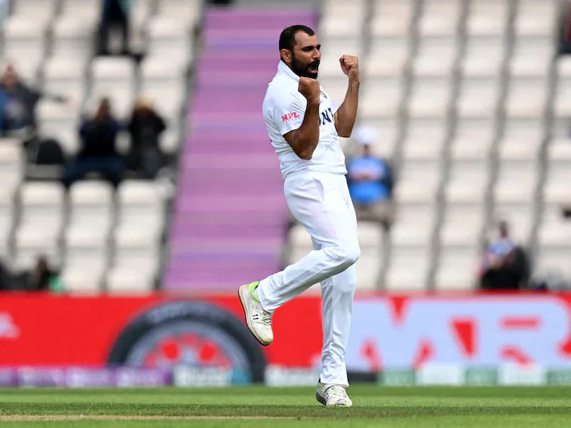

Mohammed Shami
Role: Bowler
Bio: A right-arm fast bowler known for his seam and swing bowling, Shami is a crucial member of the Indian bowling attack.
Career Stats
| Format | Matches | Wickets | Best Bowling | Average | Economy | Strike Rate | 4-Wicket Hauls | 5-Wicket Hauls |
|---|---|---|---|---|---|---|---|---|
| Test | 58 | 221 | 6/56 | 27.6 | 3.3 | 56.4 | 8 | 2 |
| ODI | 83 | 167 | 4/56 | 29.9 | 5.3 | 5.6 | 4 | 1 |
| T20I | 20 | 24 | 3/33 | 30.4 | 8.4 | 21.8 | 0 | 0 |
Memorable Moments
Shami's remarkable 5-wicket haul against South Africa in the 2019 World Cup showcased his ability in high-pressure situations.
His performance in the 2021 Test series against Australia, including key wickets, solidified his reputation as a top bowler.